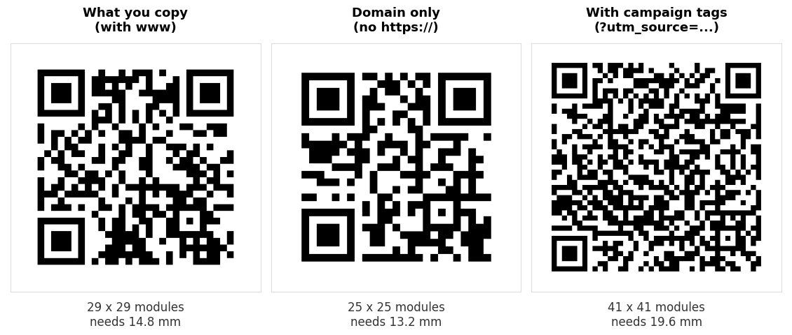

Turning a URL into a QR code takes about four seconds, which is why almost nobody thinks about it. Then the poster comes back from the printer and the code is denser than it needed to be, or it points at a redirect that stopped working, or half the width was spent on campaign tags nobody reads.
None of that is the generator's fault. It encoded exactly what you pasted. The decisions that matter all happen before you paste.
The short version
- Open the page and copy the address from the browser bar, so you get the address it settles on rather than the one you typed.
- Keep
https://. - Drop
www.if the site loads without it. - Delete tracking parameters unless you genuinely need them.
- Paste it into our URL QR code generator, download, then scan it and follow the link.
What we measured: six forms of one address
We encoded the same destination six ways at error correction level M, recorded the grid, and decoded every code back to confirm it matched. Print size is the smallest usable width, from the 0.4 mm per module floor plus the quiet zone.

| Form | Chars | Grid | Smallest usable print |
|---|---|---|---|
https://www.example.com/summer-sale/ | 36 | 29 x 29 | 14.8 mm |
https://example.com/summer-sale/ | 32 | 29 x 29 | 14.8 mm |
https://example.com/summer-sale | 31 | 29 x 29 | 14.8 mm |
example.com/summer-sale | 23 | 25 x 25 | 13.2 mm |
https://example.com/s (short path) | 21 | 25 x 25 | 13.2 mm |
| With three campaign tags | 87 | 41 x 41 | 19.6 mm |
All six decoded. The interesting part is the first three rows, which are identical in grid despite differing by five characters.
QR codes grow in steps, not per character. A code jumps from 25 by 25 to 29 by 29 to 33 by 33 and so on, and within a step extra characters are free. Deleting www. and the trailing slash saved five characters and changed nothing at all about the printed result. Tidier, not smaller.
That single fact contradicts a lot of advice about shortening links for QR codes. Trimming is only worth doing when it carries you across a step boundary. Shortening the path from /summer-sale to /s does cross one, which is why row five is a size smaller than row three.
Should you keep https:// ?
Yes, in almost every case.
Row four shows that example.com/summer-sale is genuinely smaller, 25 by 25 against 29 by 29. It is the one trim in the table that pays. But what you are encoding is no longer a URL, it is a string that happens to look like one, and how a scanner treats it is then a guess rather than a rule. A scanner that recognises the pattern may offer to open it. One that does not will show it as plain text for the person to retype.
1.6 mm is not worth the ambiguity. That is the entire saving from dropping the prefix. For a poster or a menu card, keep https:// and print the code 1.6 mm wider. The only time the trim is tempting is at the smallest printed sizes, and that is exactly where a shorter path would serve you better anyway.
Never use http:// when the site supports https://. It is the same length, and it invites a browser warning on a code you cannot reprint.
Dropping www
Free to do, as the table shows, and free is not the same as useful. Two rules:
- Test the version without
www.in a browser first. Most sites redirect one to the other, but not all, and a printed code pointing at a hostname that does not resolve is unrecoverable. - A redirect costs the person scanning an extra round trip. Encode the address the browser settles on rather than the one that bounces.
That second point matters more than the character count. Open the page, let it finish loading, then copy from the address bar. You will sometimes find the address you have been given is not the address the site actually uses.
The uppercase trick, and why it usually does nothing
You may run into the advice that writing a URL in capitals makes a smaller QR code. It comes from a real feature of the format. QR has a compact alphanumeric mode for uppercase letters, digits and a handful of symbols, and a generator that uses it can fit more in.
We tested it. Encoding HTTPS://EXAMPLE.COM/SUMMER-SALE with a library that selects alphanumeric mode gave 25 by 25, against 29 by 29 for the lowercase form. Both decoded correctly. The saving is real.
Then we ran the same string through the library our own generator uses and got 29 by 29 for both cases. It encodes everything as bytes and never switches modes, so the capitals bought nothing. Whether the trick works at all depends on which generator you happen to be using, and most tools do not tell you.
Two reasons we do not recommend it, even where it works. Domain names ignore case, but paths usually do not. /Summer-Sale and /summer-sale are different pages on most servers, so capitalising a path can point your code at a 404. And a shouting address printed under a code looks like a mistake. Use a shorter path instead. It gets you the same step down without either problem.
Tracking parameters are expensive
Adding three campaign tags took the address from 31 characters to 87, and the code from 29 by 29 to 41 by 41. That is 4.8 mm of extra printed width, a third more than the clean address needed in total, spent on text no human will ever read.
Sometimes that is the right trade. If the tags are how you find out whether the poster worked, pay the 4.8 mm. But there is usually a better way:
- Give the campaign its own short path, such as
example.com/poster, and redirect it. You get a clean attribution in your analytics and a 25 by 25 code. - Drop
utm_campaignif you only have one QR campaign running. Source and medium often answer the question by themselves. - Never encode a session id or a personalised token. They expire, and a printed code does not.
Link shorteners: what you gain and what you give up
A shortener gives you a small code and the ability to change the destination later, which a static code otherwise cannot do. Both are genuinely valuable for printed work.
What you give up is control. The short domain is somebody else's, the service can change its pricing or disappear, some corporate networks block the common shorteners outright, and the person scanning cannot see where they are going before they tap. That last one matters more than it used to, because hidden destinations are how QR code scams work. We covered the warning signs in are QR codes safe.
A short path on a domain you own gets you the same 25 by 25 code and the same ability to repoint it, with none of those drawbacks. If you own a domain, use it. The full comparison is in static vs dynamic QR codes.
Five checks before you print
- Scan it and follow the link. Not just decode it, tap through and watch the page load. A code can decode perfectly and still point somewhere wrong.
- Check it on mobile data, not office WiFi. Nobody scanning your poster is on your network.
- Check the page works on a phone. Every scan is a mobile visit. A desktop only page is a wasted print run.
- Use SVG for print. A PNG scaled up at the printer softens the module edges, and soft edges are the single biggest cause of scan failures. Our customiser exports SVG.
- Print one proof and scan it from the real distance. On paper, in the light it will actually live in.
If you need many codes for different addresses, our bulk generator takes a list, and the batch guide covers what goes wrong at volume.
Common questions
Do QR codes for URLs expire?
The code does not. It is a printed pattern holding an address and there is no account behind it. What expires is the page. If the address changes or the site moves, every printed copy stops working, which is the argument for pointing codes at a path you control.
How long can the URL be?
Far longer than any sensible address, but length shows up as printed size. At level M a 20 mm code holds about 106 characters, a 30 mm code about 287, and a 45 mm code about 711. The sign size guide has the full table.
Can I see how many people scanned it?
Not from the code itself. Point it at a page on your own site and read your normal analytics, or give the campaign its own path so the visits are easy to separate.
Why does my code open the wrong page?
Usually a redirect, or a path whose capitalisation does not match. Open the address in a private browsing window exactly as encoded and see where it lands.
Is a longer URL less reliable?
Only through density. A longer address means more, smaller modules at the same printed width, and small modules are what blur and cheap cameras defeat. Printed larger, a long code is as reliable as a short one. We measured the failure points in why won't this QR code scan.
Should I put the address in text under the code?
Yes, if it is short enough to read. It gives people a fallback if scanning fails, and it shows them where they are going before they tap, which is the simplest thing you can do to make a printed code trustworthy.